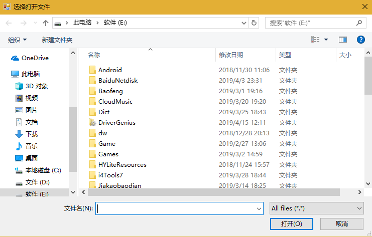
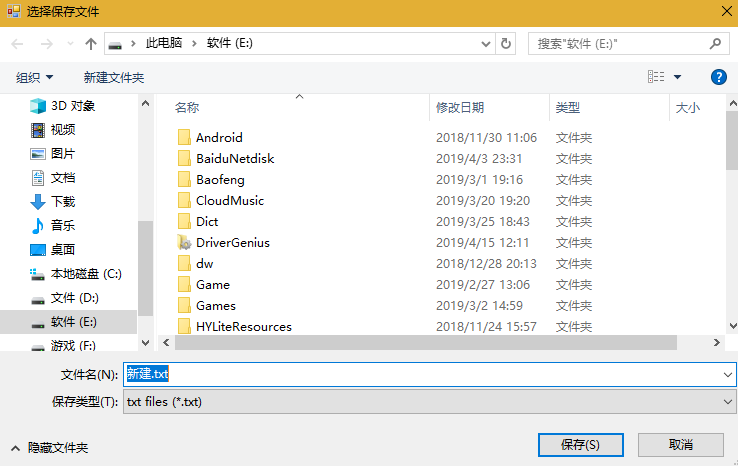
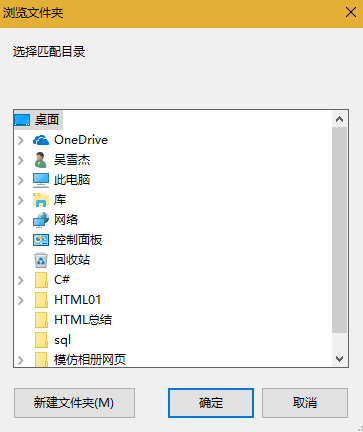
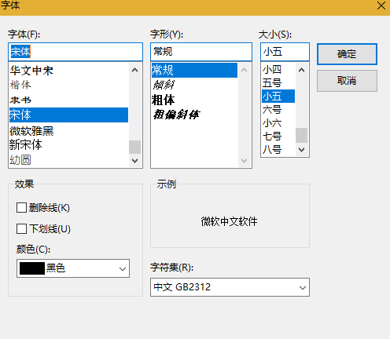
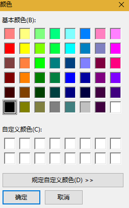

原文出处:本文由博客园博主不长记性的脑子、提供。
原文连接:https://www.cnblogs.com/xuejie-shool/p/10721102.html
原文连接:https://www.cnblogs.com/xuejie-shool/p/10721102.html
1、OpenFileDialog

1 private void FileOpen_Click(object sender, EventArgs e)
2 {
3 OpenFileDialog openFile = new OpenFileDialog();//创建OpenFileDialog对象
4
5 openFile.InitialDirectory = @"E:\";//打开初始目录
6 openFile.Title = "选择打开文件";//窗体标题
7 openFile.Filter = "txt files (*.txt)|*.txt|All files (*.*)|*.*";//过滤条件
8 openFile.FilterIndex = 2;//获取第二个过滤条件开始的文件
9 openFile.Multiselect = true;//是否多选
10
11 if (openFile.ShowDialog() == DialogResult.OK)//页面弹出判断是否点击确定按钮
12 {
13 //没勾选多选时
14 //string filename = openFile.FileName;
15 //string name=openFile.SafeFileName;
16
17 //勾选多选时
18 for (int i = 0; i < openFile.SafeFileNames.Length; i++)//获取文件名，拓展名
19 {
20 rictbo.Text += openFile.SafeFileNames[i] + "\r\n";
21 }
22 for (int i = 0; i < openFile.FileNames.Length; i++)//获取文件全部路径
23 {
24 rictbo.Text += openFile.FileNames[i] + "\r\n";
25 }
26 }
27 }
2、SaveFileDialog
SaveFileDialog与OpenFileDialog属性基本相同就简单写了
1 private void button1_Click(object sender, EventArgs e)
2 {
3 SaveFileDialog saveFile = new SaveFileDialog();
4
5 saveFile.InitialDirectory= @"E:\";//打开初始目录
6 saveFile.Title = "选择保存文件";
7 saveFile.Filter = "txt files (*.txt)|*.txt|All files (*.*)|*.*|图片(.jpg)|*.jpg";//过滤条件
8 saveFile.FilterIndex = 1;//获取第二个过滤条件开始的文件拓展名
9 saveFile.FileName = "新建";//默认保存名称
10
11 if (saveFile.ShowDialog()==DialogResult.OK)//页面弹出判断是否点击确定按钮
12 {
13 string txt = rictbo.Text;
14 //写入
15 File.WriteAllText(saveFile.FileName, txt);
16 }
17 }
18 }
3、FolderBrowserDialog
这个使用的不多日后用到再添加
1 private void button2_Click(object sender, EventArgs e)
2 {
3 FolderBrowserDialog dialog = new FolderBrowserDialog();
4 dialog.Description = "选择匹配目录"; ;//左上角提示
5 string path = string.Empty;
6
7 if (dialog.ShowDialog() == DialogResult.OK)
8 {
9 path = dialog.SelectedPath;//获取选中文件路径
10 }
11 }
4、FontDialog
1 private void button3_Click(object sender, EventArgs e)
2 {
3 FontDialog fontDialog = new FontDialog();
4
5 fontDialog.ShowColor=true;//显示颜色选择
6 fontDialog.Font = rictbo.Font;
7 fontDialog.Color = rictbo.ForeColor;
8
9 if (fontDialog.ShowDialog()==DialogResult.OK)//页面弹出判断是否点击确定按钮
10 {
11 rictbo.Font = fontDialog.Font;//字体
12 rictbo.ForeColor = fontDialog.Color;//字体颜色
13 }
14 }
5、ColorDialog
1 private void color_Click(object sender, EventArgs e)
2 {
3 ColorDialog colorDialog = new ColorDialog();
4
5 //colorDialog.AllowFullOpen = false;是否启用自定义颜色
6 colorDialog.Color = rictbo.ForeColor;
7 if (colorDialog.ShowDialog()==DialogResult.OK)
8 {
9 rictbo.ForeColor = colorDialog.Color;
10 }
11 }